musiccandidaterights:unknown175s
02 Windows
nocturnal track
music:0a04723b0f22ef0f
128 assets · generated 2026-07-18T17:35:18.661Z
nocturnal track
music:0a04723b0f22ef0f
nocturnal track
music:d9339cd56292eaa2
nocturnal track
music:9d1c2f09342d3b4f
preview
music:af57f5c4e6c9c0bf
preview
music:e52722df1750fed6
track
music:4c83b6add01daaf2
long form master
music:067b0afa513874a2
section
music:ee132521919ad927
section
music:91303790eb052ed4
section
music:14ae5a21dc5baaaa
calm, reflective, minimal, warm, cinematic, uplifting, ambient preview
music:df4b14cc5d4b4932
short track
music:d79b6cf586bd9032
long form master
music:42cf268c08ad02b7
section
music:dfc1dc0c5e4064dd
section
music:e4def592dff471f5
section
music:951e7ff4e2fc33ff
section
music:7662d0d2d40a1571
short track
music:c9655d558fe6077a
long form master
music:430a2a2aa172a933
section
music:dbdf3cfa6dece8cc
section
music:8ab618df9cd46d50
section
music:2fda523f62319cbc
section
music:3dda03c5335f4642
section
music:249bcfe76f5bdfa3
preview
music:7bb12e8ffbf87fd6
long form master
music:c4b04d3e701d8eea
section
music:291c1ce3777cd14e
section
music:55ce951d6c1cca58
section
music:9442749b54cfe1ac
section
music:1cc4cd8c30f31618
dreamy track
music:a0bdc7f9cf67ad04
dreamy long form master
music:6c695ef00a95af7d
dreamy section
music:20ca061d36dfaefe
dreamy section
music:142ac266fb3e81c6
dreamy section
music:cf4800aa80151a81
dreamy section
music:a35c4d817c11c2ec
calm, minimal, warm, nocturnal, cinematic, uplifting, lofi, ambient long form master
music:6b87fa085a345d19
calm, minimal, nocturnal, uplifting, lofi, ambient track
music:783d2bf966a67bb4
calm, minimal, warm, nocturnal, cinematic, uplifting, lofi, ambient long form master
music:b0c5f3a4f42921aa
calm, minimal, warm, nocturnal, cinematic, uplifting, lofi, ambient section
music:2a90c39e26faa3c0
nocturnal preview
music:203cf84f59c16ab8
nocturnal long form master
music:3a12e21bc3dad39f
long form master
music:865f61a049f3e741
long form master
music:bf0f41ad1a295701
long form master
music:d871c4cb91f471f6
long form master
music:4ed0c046ea564de0
long form master
music:b5e2e3170330df64
long form master
music:c63ff9aa602914b8
preview
music:492a9ae2506ee944
calm, intimate, reflective, minimal, warm, cinematic, uplifting, melancholic, ambient track
music:545c41a1f8fef16f
long form master
music:826fb54a9c5932d7
section
music:4ae65b0064171032
section
music:88aeed5e06ff8880
section
music:c23f45ec5d893a5b
section
music:e967a0cf1dd45c6a
section
music:459aac734f3eedf1
section
music:cff5856a1faa9b8d
section
music:df3491bc4557bb30
section
music:4d7c5631384b5ee0
section
music:7dbd82dfd80309b3
section
music:bebdb7fca30c3d5f
section
music:199734f26463a45b
section
music:295d2fbd847ebf87
section
music:cda75d64b9e02c32
preview
music:05132b64dcb3a092
preview
music:092002d4b17dc26c
preview
music:37073cf7e434f275
preview
music:4191dfa6c86ac8d2
preview
music:73fa0682f09c0117
preview
music:dd17d1a92abb6dfa
preview
music:7071d07a2921ce00
nocturnal preview
music:674d112707c3288c
dark preview
music:d9c27c56f28afe9c
calm, minimal, warm, dark, uplifting, lofi short track
music:854fbfaee3f79702
short track
music:d9d67a214a78b41d
calm, intimate, reflective, minimal, warm, nocturnal, cinematic, uplifting short track
music:b161e820cd4f5741
short track
music:5ce1475f7b1598eb
lofi short track
music:842a4e6ed11b04d1
nocturnal long form master
music:e466f91daa4828e6
calm, minimal, nocturnal, cinematic, lofi section
music:3244aa70fdd322bf
calm, minimal, nocturnal, cinematic, lofi section
music:5b3f97c5e6adb532
preview
music:d638c0a779a4e4e3
calm, minimal, dark, lofi short track
music:698a8d22de73b8c4
minimal, dark, energetic, lofi short track
music:1943a4323794b66a
preview
music:257990a3442c5988
preview
music:c3090edba470e562
nocturnal track
music:4cc4c560b9adb55a
calm, intimate, reflective, minimal, warm, nocturnal, cinematic, uplifting, ambient long form master
music:acbc0b82e70ac777
track
music:8f555dbd7ec57d10
long form master
music:ff0b19ac2e7d4524
section
music:dcc28f303fd8d328
section
music:faae7186e46f6988
section
music:92d1280219d1d12b
long form master
music:952284ac77dbe744
section
music:062d889ecca848ec
section
music:60776e3d2f0fe0b1
section
music:e5a7c1b6aa4fc123
section
music:42bd7ab383fce61f
calm, minimal, warm, nocturnal, dark track
music:a89d8848a8852209
nocturnal long form master
music:9c5e612fab5cc02d
preview
music:3c915e456072a2d3
calm, intimate, reflective, minimal, warm, nocturnal, cinematic, uplifting preview
music:b3726c832ecbc129
section
music:45c01009ee1a588c
section
music:537cee277ab5b36f
section
music:badc5d572fecf984
long form master
music:78525bab99582c75
section
music:96f391a330bf97be
preview
music:8b307337b415214c
long form master
music:b60d538b2bda62b2
section
music:58e1d9ece5293b65
section
music:4915dff22ba9d02c
nocturnal preview
music:e71aadb4b648e435
nocturnal preview
music:1ef719b062955bb2
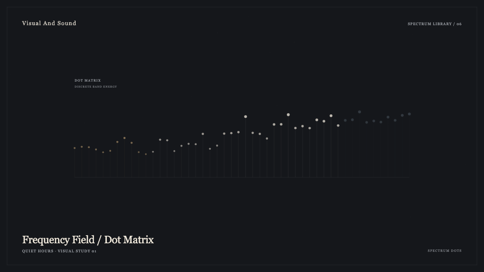
Motion Ninja dotted visualizer preset
visualizer:spectrum-dots:v1
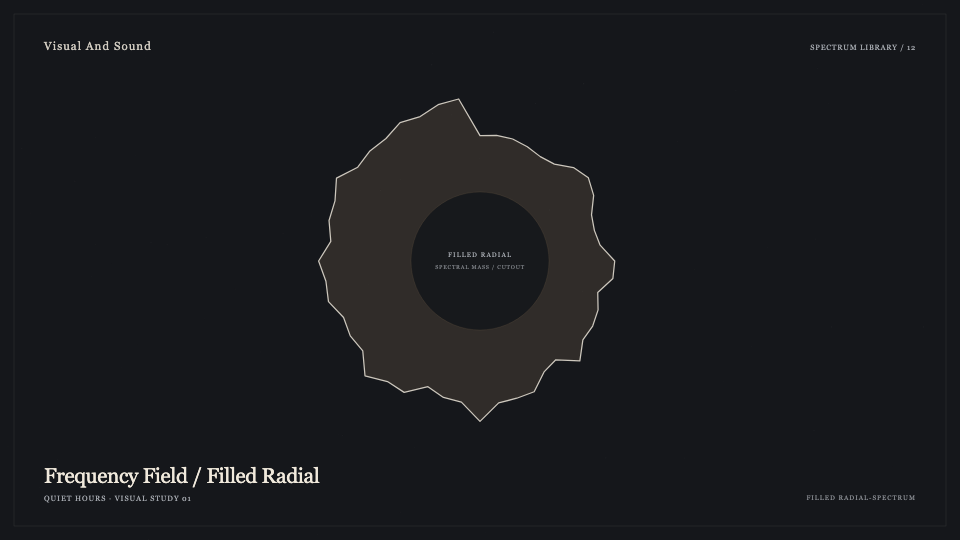
Motion Ninja filled circular presets
visualizer:filled-radial-spectrum:v1
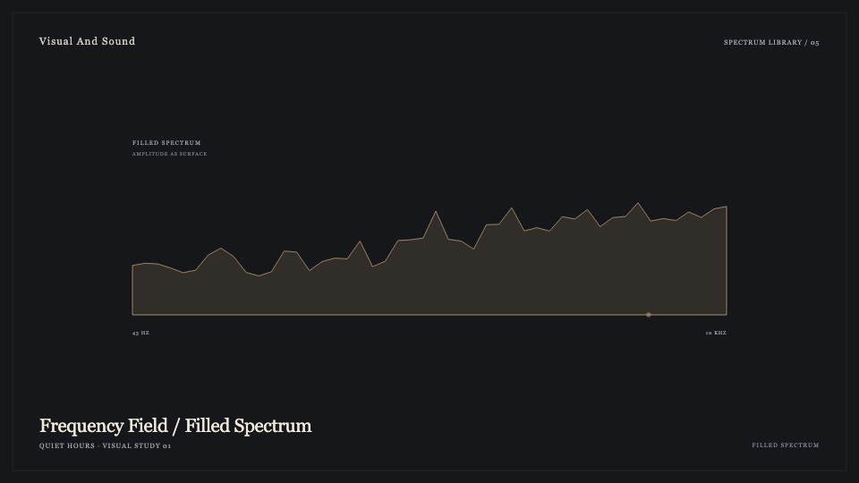
Motion Ninja filled visualizer presets
visualizer:filled-spectrum:v1
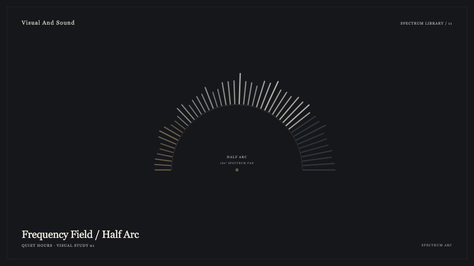
Motion Ninja semicircle presets
visualizer:spectrum-arc:v1
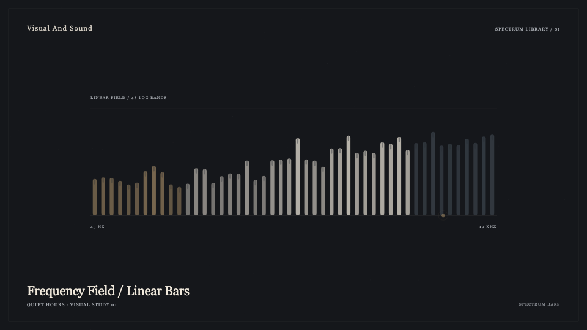
Intro waveform and horizontal bar templates
visualizer:spectrum-bars:v1
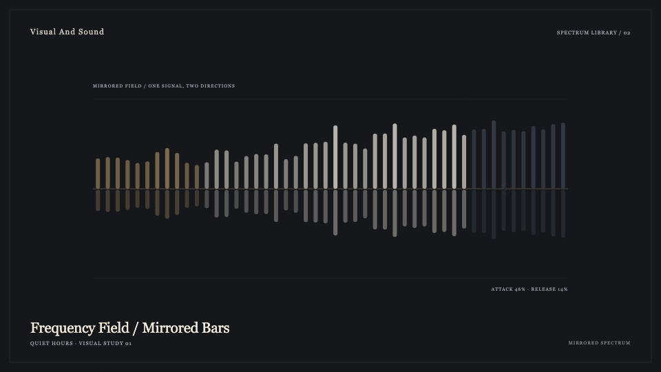
Avee twin-sided horizontal template
visualizer:mirrored-spectrum:v1
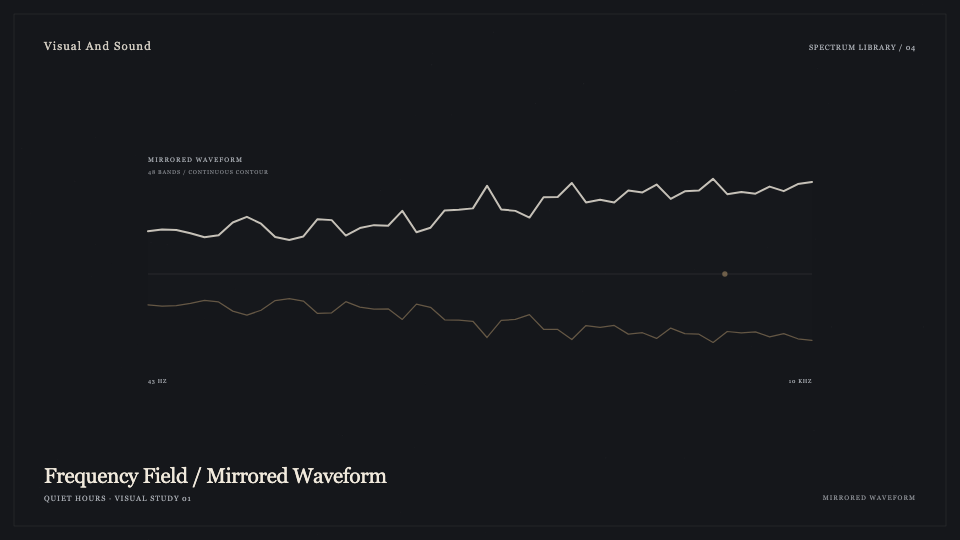
Avee upper/lower waveform template
visualizer:mirrored-waveform:v1
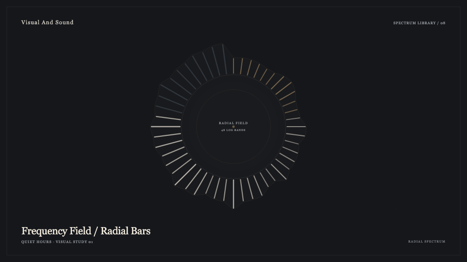
Motion Ninja circular visualizer and Avee ring templates
visualizer:radial-spectrum:v1
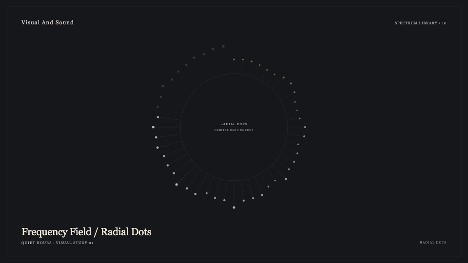
Dotted circular and half-ring presets
visualizer:radial-dots:v1
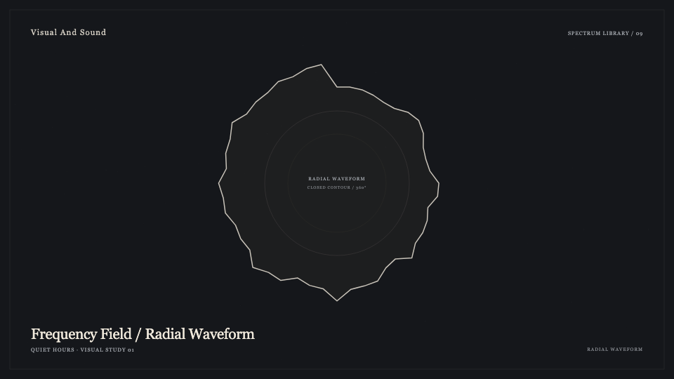
Organic circular contour shown in Motion Ninja demo
visualizer:radial-waveform:v1
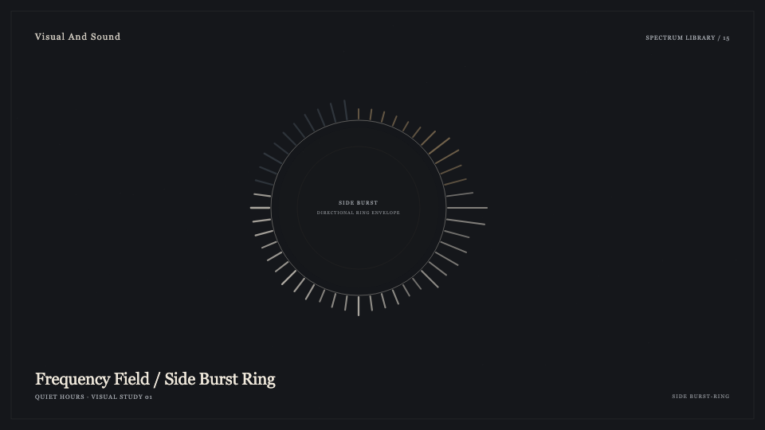
Avee ring with directional side emissions
visualizer:side-burst-ring:v1
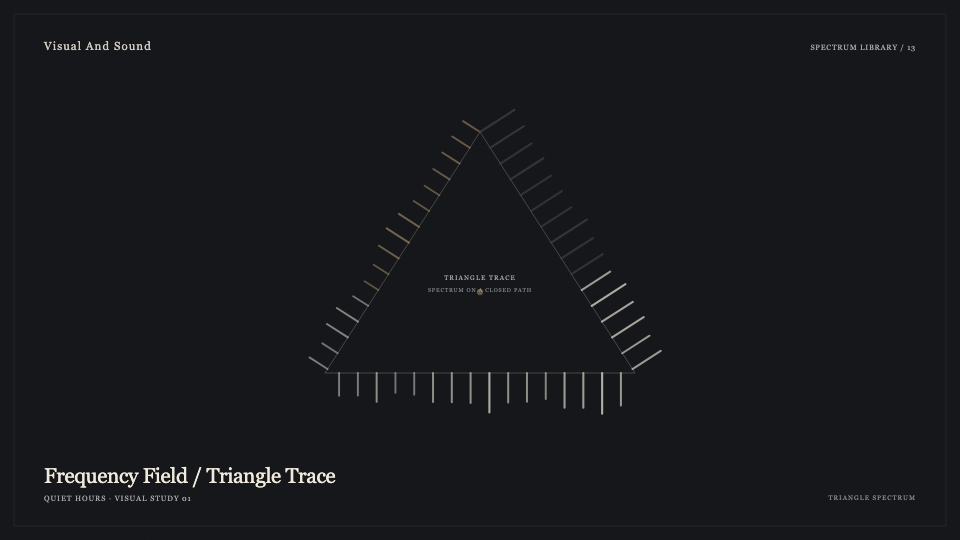
Avee triangle perimeter template
visualizer:triangle-spectrum:v1
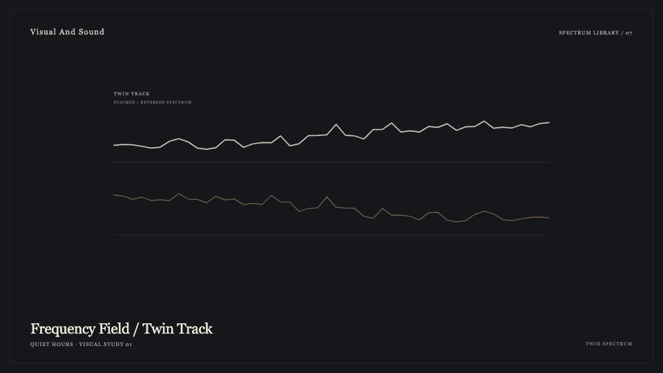
Avee stacked player layout
visualizer:twin-spectrum:v1
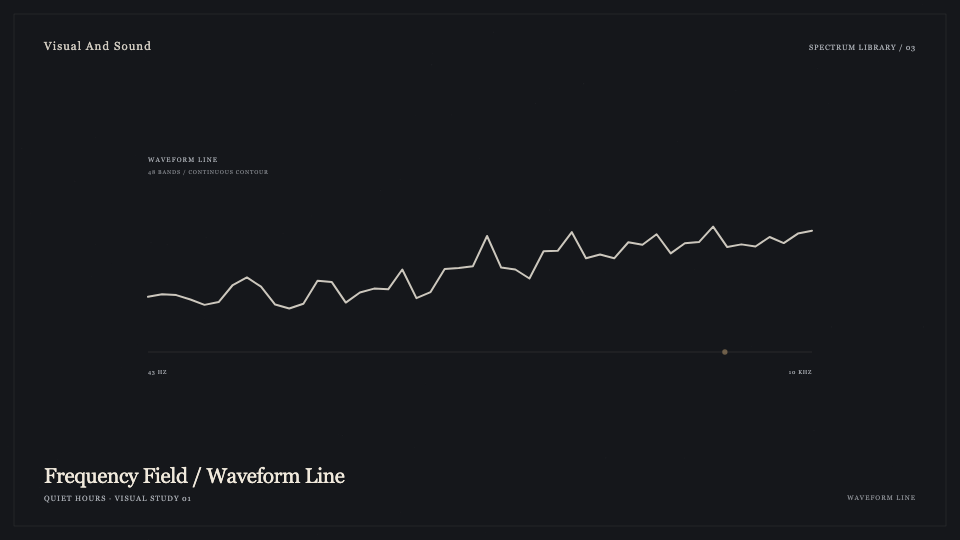
Avee cyan and white continuous-line templates
visualizer:waveform-line:v1
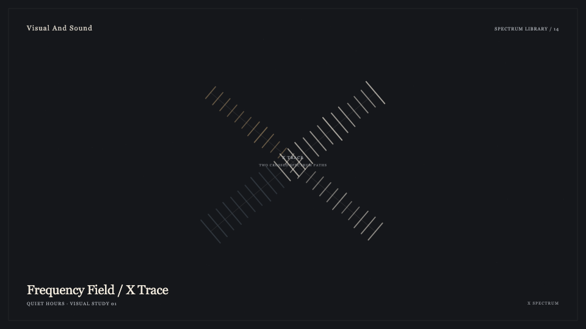
Avee X-shaped template
visualizer:x-spectrum:v1